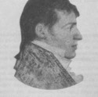

Beaubien-Perrault-Benington - Family Card
Beaubien-Perrault-Benington - Family Card
Rev. John Stuart(24 Feb 1740 - 15 Aug 1811)UNKNOWN Smith
Jane Okill(5 Jul 1747 - 19 Jun 1821)
Unmarried

b. 25 Nov 1785, Cataraqui, Ontario
d. 21 Feb 1840, Québec, Québec
br. 24 Feb 1840, Holy Trinity Cathedral, Québec, Québec
occ. avocat, auteur, soliciteur-général
edu.
rel.
Flags. Beaubien
b. 1795
d. 11 Oct 1836, Québec, Québec
br. 13 Oct 1836, Québec, Québec
occ.
edu.
rel.
Flags. To Do
Children
Mary Stuart(5 Jan 1820 - 2 Mar 1820)
Jane Victoria Stuart(27 Mar 1821 - 11 Jun 1897)
Ann Mary Stuart(15 Dec 1822 - 22 Dec 1859)
William Wallace Stuart(4 Jan 1824 - 3 Jul 1909)